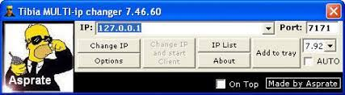

Mages (Druid ou Sorcerer)
auto 200 stronghaste
auto 200 manashield
auto 9000 eatfood
auto 200 healparalysis utani gran hur
auto 200 attack target
auto 200 sd target
auto 200 say 'Exevo gran mas frigo (ou mas flam, vis , tera)
auto 200 siofriend 85 (name)
auto 200 equipboots 6529 * Equipará soft boots!
auto 200 paralyze target
Elite knight
auto 200 haste
auto 200 attack target
auto 200 say 'Exori gran (ou ico, hur)
auto 200 equipboots 6529 * Equipará soft boots!
auto 60000 utito tempo
auto 200 listas 'Health RP' | if [$hppc < 88] {say 'exana mort'} | if [$hppc < 95] say 'exori ico'
Royal Paladin
auto 200 haste
auto 200 manashield
auto 200 attack target
auto 200 listas 'Health RP' | if [$hppc < 88] {say 'exura san'} | if [$hppc < 95] say 'exura gran'
auto 100 listas 'Trocar Ring' | if [$hppc <= 60] {equipring 3051} | if [$hppc => 90] {equipring IDRING}
auto 60000 utito tempo san
auto 200 say 'Exevo mas san (ou exori san, exori con)
Todas Hotkeys
HP menor que 67% usará Exura Vita, com HP menor que 88% usará Exura Gran e com HP menor que 95% usará Exura. Fique a vontade para alterar ao seu gosto.
auto 200 listas 'Health Mage' | if [$hppc < 67] {say 'exura vita'} | if [$hppc < 88] {say 'exura gran'} | if [$hppc < 95] say 'exura'
Com HP menor que 88% usará Exura San e com HP menor que 95% usará Exura Gran. Fique a vontade para alterar ao seu gosto.
auto 200 listas 'Health RP' | if [$hppc < 88] {say 'exura san'} | if [$hppc < 95] say 'exura gran'
Com HP menor que 95% usará Exana Mort. Fique a vontade para alterar ao seu gosto.
auto 200 listas 'Health EK' | if [$hppc < 95] say 'exana mort'
Vai usar potion em você quando estiver com Mana menor ou igual a 75%, pode mudar para quanto quiser. Para servers editados também podem ser runas.
auto 100 listas 'Potion HP' | if [$hppc <= 75] {useoncreature IDPOTION self}
Health Friend (Sio, Res e UH) Sio Friend Pode mudar para a % que quiser, abaixo está em 70%.
auto 100 listas 'Sio Friend' | safe sio 70 friend
UH Friend Pode mudar para a % que quiser, abaixo está em 70%.
auto 100 listas 'UH Friend' | safe uhpc 70 friend
Sio Party Pode mudar para a % que quiser, abaixo está em 70%.
auto 100 listas 'Sio Party' | foreach 'allplayers' $l {if [$l.party >= 3 && $l.hppc < 70] {say 'exura sio "$l.name'}}
Sio All Vai dar sio em qualquer um na tela, não precisa estar em party nem ser friend. Pode mudar para a % que quiser, abaixo está em 70%.
auto 200 listas 'Sio ALL' | foreach 'screenplayers' $sio if [$sio.hppc <= 70 && $sio.isshootable] {say 'exura sio "$sio.name"'}
Exura Gran Mas Res Vai dar mas res se algum amigo estiver até 3 sqm de você com vida baixa. Pode mudar para a % que quiser, abaixo está em 70%.
auto 200 listas 'Area Res' | foreach 'floorplayers' $exresres if [$exresres.isfriend && $exresres.hppc <= 70 && $exresres.distance <= 3] {say exura gran mas res}
Bless e Aol Bless sempre que reconectar
auto 200 listas 'Auto Blessings' | if [$connected == 1 && $blessings != 1] {say !bless | wait 1000 | say !bless | wait 1000 | say !bless | set $blessings 1} | if [$connected == 0] {set $blessings 0}
Aol sempre que estiver sem amuleto
auto 200 listas 'Auto Aol' | if [$amuletslot.id == 0] {say !aol | wait 1000}
Reconnect Se morrer
auto 200 listas 'Reconnect' | if [$hp == 0] {reconnect | wait 5000}
Se desconectar
auto 200 listas 'Reconnect' | if [$connected == 0] {reconnect | wait 5000}
Se desconectar aleatório Igual a hotkey anterior, porém ele irá relogar em um tempo aleatório. Útil para não bugar no Server Save.
auto 200 listas 'Reconnect' | if [$connected == 0] {reconnect | wait $rand.30000.90000}
Se morrer ou desconectar
auto 200 listas 'Reconnect' | if [$hp == 0 || $connected == 0] {reconnect | wait 5000}
Anti-idle Se você ficar parado por 3 minutos ou mais seu char começará a girar.
auto 200 listas 'Anti-idle' | if [$standtime >= 3*60*1000] {turnn | wait 1000 | turne | wait 1000 | turnw | wait 1000 | turns | say '' | wait 1000}
Dash Só adicionar as hotkeys por tecla em seus respectivos números.
1 – movesw 2 – moves 3 – movese 4 – movew 6 – movee 7 – movenw 8 – moven 9 – movene
Bugmap WASD
auto 1 listas 'Bugmap - WASD' | if [$key.65] {usegroundxyz [$posx-7] $posy $posz | end} | if [$key.68] {usegroundxyz [$posx+7] $posy $posz | end} | if [$key.83] {usegroundxyz $posx [$posy+6] $posz | end} | if [$key.87] {usegroundxyz $posx [$posy-6] $posz | end} | if [$key.67] {usegroundxyz [$posx+6] [$posy+5] $posz | end} | if [$key.90] {usegroundxyz [$posx-6] [$posy+5] $posz | end} | if [$key.81] {usegroundxyz [$posx-6] [$posy-5] $posz | end} | if [$key.69] {usegroundxyz [$posx+6] [$posy-5] $posz | end}
Manashield (Utamo Vita)
auto 100 listas 'ManaShield' | if [$manashielded == 0] {say 'utamo vita'}
Eat food Todos os foods
auto 200 listas 'EatFood' | eatfood | wait 60000
Custom Food/BP Fechada Você pode substituir o ID por qual desejar, no caso está do brown mushroom, ela usa o food com bp fechada.
auto 200 listas 'Custom Food' | wait 1000 | useitem 3725 | wait 60000
essa funciona em todos os itens, porém, precisa estar com a bp em que o item está aberta.
auto 200 listas 'Stamina Item' | if [$formattime.$stamina <= '00:41:00'] {openitem IDITEM | wait 30000}
Change gold Gold
auto 1500 listas 'Change Gold' | if [$itemcount.3031 > 100] { openitem 3031 2 ''}
Platinum
auto 1500 listas 'Change Platinum' | if [$itemcount.3035 > 100] { openitem 3035 2 ''}
Crystal
auto 1500 listas 'Change Crystal' | if [$itemcount.3043 > 100] { openitem 3043 2 ''}
Change All
auto 1500 listas 'Change Coin' | if [$itemcount.3031 > 100] { openitem 3031 2 ''} | if [$itemcount.3035 > 100] { openitem 3035 2 ''} | if [$itemcount.3043 > 100] { openitem 3043 2 ''}
Auto runas (SD, Paralyze e Avalanche) SD Targeting Vai atacar o seu targeting com SD.
auto 200 listas 'SD Target' | sd target
Vai atacar o seu targeting com Paralyze, porém ao chegar em 10% de mana irá desativar automaticamente, você pode mudar.
auto 200 listas 'Paralyze Target' | if [$mppc > 10] {if [$target.isfriend == 0 && $target.isshootable] {safe paralyze target}} else {turnoff}
Magic Wall Ao apertar o scroll do mouse, vai abrir a mira para usar a mw, você pode substituir o ID 3180 para qualquer outra runa. Key 4 é a identificação do scroll do mouse. Confira a numeração das keys do teclado aqui: Keys Enumeração
auto 100 listas 'MW Scroll' | if [$key.4] {crosshair 3180}
Combo UE Coloque a mensagem que vai falar, o líder do combo e substitua a magia a depender da vocação.
auto 200 listas 'Combo ue' | foreach 'newmessages' $uejob if [$uejob.content == 'boom' && $uejob.sender == 'LÍDER DO COMBO'] {say 'exevo gran mas frigo'}
Travar Targeting Semelhante a famosa 'auto 1 attack target', porém sem exhausted.
auto 1 dontlist | if [$target.isonscreen == 1 && $tagertt == 0] {attack target | set $tagertt 1} | if [$target.isonscreen == 0] {set $tagertt 0} | if [$target.isonscreen && $target.name == 0] {attack target} | if [$target.isonscreen && $attacked.name == 0] {attack target | wait 500}
Auto Mensagem (Trade, Help e etc) Basta substituir o 'Trade' por o canal que desejar e ele irá repetir a mensagem a cada 30 segundos.
auto 200 listas 'Auto Channel MSG' | {sayin 'Trade' 'MENSAGEM' | wait 30000}
ings e Amuletos (Energy Ring, Might Ring, SSA...) Energy Ring O 60 representa que em 60% de HP irá equipar o energy ring. O 90 representa que em 90% de HP irá desequipar o energy ring. Você pode substituir as porcentagens para o quanto quiser.
auto 200 listas 'Energy Ring' | if [$hppc <= 60] {equipring 3051} | if [$hppc => 90] {unequip 'ring' 'empty'}
Alternar Energy Ring O 60 representa que em 60% de HP irá equipar o energy ring. O 90 representa que em 90% de HP irá desequipar o energy ring e equipar o ring de sua preferência, basta colocar o ID onde indica na hotkey. Você pode substituir as porcentagens para o quanto quiser.
auto 100 listas 'Trocar Ring' | if [$hppc <= 60] {equipring 3051} | if [$hppc => 90] {equipring IDRING}
Might Ring Full A hotkey irá puxar continuadamente Might Ring sempre que acabar, mas você precisa estar com backpack aberta e sem nenhum ring equipado.
auto 100 listas 'Might Ring' | if [$ringslot.id != 3048] {equipring 3048}
Exiva Last Fica exivando o último que você exivou a cada 3 segundos
auto 3000 listas 'Exiva Last' | exivalast
Target Exiva seu target a cada 3 segundos
auto 3000 listas 'Exiva Target' | exivatarget
Anti-Push Gold e Platinum
auto 100 listas 'Anti-Push' | ifnot [$topitem.$posx.$posy.$posz == 3035 || $topitem.$posx.$posy.$posz == 3031] {dropitemsxyzamount $posx $posy $posz 3031 $rand.1.3} | ifnot [$topitem.$posx.$posy.$posz == 3035 || $topitem.$posx.$posy.$posz == 3031] {dropitemsxyzamount $posx $posy $posz 3035 $rand.1.2}
DOWLOADS
Download elfbot (senha 123):
https://www.mediafire.com/file/rn8j40it1bupwj7
Download da dll:
https://www.mediafire.com/file/cg4xkxw1p1646tf/elfbot.dll
Download do Tibia 8.6
http://www.mediafire.com/file/p65yg38tq11ndlr/Tibia86.rar
Download ip changer (senha 123):
https://www.mediafire.com/file/l9m86owx01r5r7l
TUTORIAL
Como configurar a aba 'Targeting' do seu Elfbot

O sistema de segmentação pode ser usado por usuários avançados e regulares. Ele pode executar as tarefas mais simples, mas também agir de forma mais inteligente com mais complicações, se necessário. Ele pode ser usado sozinho ou junto com o cavebot e foi criado para combater de forma mais eficaz as várias criaturas do Tibia. Ele permite que você insira como cada monstro diferente precisa ser atacado, abordado e possivelmente protegido.
Como adicionar um novo Monstro

Para começar, abra a caixa de diálogo Targeting no menu principal do bot. Várias opções estão agora disponíveis para você, conforme mostrado abaixo.
- Clique na caixa de listagem para indicar que você adicionará um novo monstro à lista.
- No campo 'Name', digite o nome do monstro, ex: Rotworm.
- Deixe o campo 'Configuração #' em 1 para preencher os campos para a configuração #1 (vamos fazer apenas uma configuração).
- Deixe o campo 'Count' em 'Any' para indicar que a segmentação escolherá esta entrada para qualquer quantidade do monstro definido na tela.
- Coloque de 0 a 100 na caixa de intervalo HP% para indicar que as seguintes configurações devem ser executadas para qualquer quantidade de hp que o monstro possa ter.
- Selecione o ataque especial que o monstro pode usar.
O Danger Level permite atribuir um valor personalizado variando de 0 a 10 para cada configuração de monstro. Este valor é usado para determinar a prioridade de seleção do monstro.
Como configurar a aba 'Cavebot' do seu Elfbot
O sistema de Cavebot permite automatizar várias ações enquanto você explora cavernas e caça no Tibia. Aqui está uma visão geral dos principais elementos do Cavebot:
Stand
Isto irá levá-lo para o destino não importa o que esteja no caminho, mesmo que tenha sido interrompido por diversas vezes durante o caminho. Use este tipo de waypoint perto de cordas e pás.
Node
Nodes são semelhantes a Stand, mas têm uma funcionalidade adicional que pode ser ligada e desligada.
Walk
Serve para andar em determinado local. É melhor usado se você quiser ir para o respaw de um monstro.
Rope
Função para usar a corda.
Ladder
Função para subir ou descer uma escada.
Action
Permite digitar comandos personalizados.(Voce pode digitar qalquer coisando dentro do campo action)
Lure
Usado com o "Lure Target” Targeting stance. Este waypoint define o local para que o personagem atraia o monstro.
Como subir escadas / rampas / buracos
Use o "Emplacement" para colocar waypoints ao seu redor. Por exemplo, para ir á um buraco que está no SQM sul de você, mude o “Emplacement” para “SOUTH” e coloque um stand waypoint.
Alarmes
Isto deve ser bastante evidente para a maior parte. Existem alarmes dos 5 diferentes eventos listados. Cada alarme tem 3 correspondentes caixas marcadas S, P e X.
[TUTORIAL] LOOTING !
Ao lado direito do cavebot tem tem o looting; Existe um quadrado grande e abaixo 3 espaços, um pequeno,medio,grande. O espeço medio q é o primeiro espaço, é aonde você vai por o ID de seus itens que você quer que pegue dos bixos. Exemplo : 3392 (ID do RH) O espaço pequeno é aonde você coloca códigos para onde vai seu loot e1 = Não vai para sua backpack principal, entao abra sua bp principal e sua bp de loot. 00 = Loot irá para sua bp principal. gg = Todo loot dropado do bixo írá ser amontuado embaixo de seu personagem. No espaço grande você coloca o nome do item. Exemplo: Royal Helmet Entao Ficará assim no exemplo: 3392 > 00 > Royal helmet Logo abaixo existem 4 quadradinhos que você DEVERÀ seleciona-los [X] Open Next BP [X] Loot Nearby targets [X] Loot Distant tergets Depois disso, você já pode dar save em seu waypoint que já irá salvar com o loot. Para salvar é só ir ao canto esquerdo do Cavebot botar o nome de seus waypoints Ex: Rotworm Darashia e dar "Save".